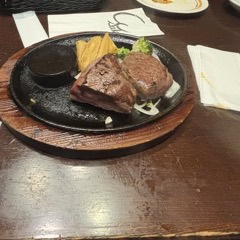
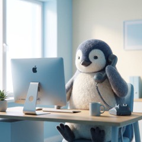
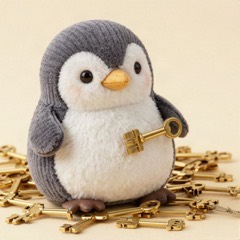
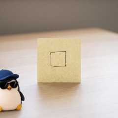
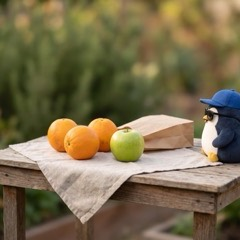
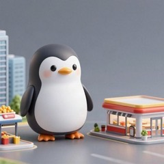
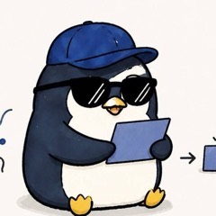
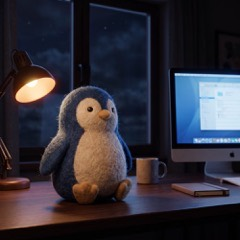
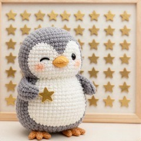

📝 下書き 27本
2026年10月20日時点。ここは、まだ本番に出していない記事の置き場です（英語と日本語だけ）。
完成の形を見ながら直して、「本番に出して」で公開します。検索には出ません。
🎯 1000本まで：公開 248 ＋ 下書き 27 ＝ 275本
公開 248下書き 27あと 725本
✏️ 少し直せば出せる 4本
本人に1つ確かめるか、仕事の言葉を消せば出せるもの
🏭 業界の話として出せそう 1本
会社が分からない、業界の一般的な話。続けて出さない・シリーズでつなげない
💼 仕事の話（業界の話に書き直してから） 8本
ブログ憲法 第1条：会社と仕事の中身は書かない。多くはこのまま置いておく
派遣社員は、3か月ごとにちょっとドキドキする
As a temp worker, my heart races a little every 3 months

職場の人に、お別れ会を開いてもらった
My team held a farewell party for me
エンジニアの30分は、お客さんがお金を払っている時間
An engineer's 30 minutes is time the client is paying for

やりとりする相手は、3種類いる
There are 3 kinds of people I deal with
川みたいになった道を歩いて出勤した
I walked to work through a road that had turned into a river
大企業だと、同じビルが知らない人だらけ
In a big company the same building is full of people I do not know
はじめての大企業は、長い年月で作られたやり方を学ぶ学校みたいだった
My first big company felt like a school, where I learned a way built over many years

正しいパスワードを探すだけで、5分10分が溶けていく
5 or 10 minutes melt away just finding the right password
🗂 そのほか 7本

小さく生きる。目標は1日1つでいい
Live small. One goal a day is enough

答えはマーケットにある
The answer is in the market
1日の終わりを決める。おやすみなさい
I decide when my day ends. Good night.

マクドナルドには、直営店とフランチャイズがある
McDonald's has company-run stores and franchise stores, and they feel different
名古屋のマクドナルドは、ウーバーイーツがすごい
At McDonald's in Nagoya, Uber Eats orders were amazing
マクドナルドのバイトで一番好きだったポジション
My favorite position at my McDonald's part-time job was "runner"
マクドナルドでは、辞めることを「卒店」と呼ぶ
At McDonald's, quitting your job is called "graduating from the store"
🔒 出さない 7本
第1条・第2条に近いもの、または本人の判断待ち
今の日本の大企業、すごいと思ったこと
Something that impressed me about big Japanese companies today

書いている本人から、日本語で読んでくれている人へ一言
A message from the owner to people reading in Japanese
日本人がひとりだけの私を、社長は気にかけてくれた
The boss worried about me being the only Japanese person there
クラーク空港には毎週行っていたので、はっきり覚えている
I went to Clark airport every week, so I remember it clearly

夜は静か。アラームが鳴るまでは
The night is quiet until an alarm goes off
ホームページに障害のお知らせを書くのも、私の仕事
Writing the outage notice on our website is also part of my job

質問したら本当に障害だった。それでシールをもらった
I got a sticker for asking a question that turned out to be a fault
💡 AIへの頼み方
「下書きにして」→
「本番に出して」→
本番から下書きに戻す →
「下書きにして」→
python3 tools/draft.py new <slug> で作って push（英日だけ・表紙はあとでいい）「本番に出して」→
python3 tools/draft.py publish <slug> → 表紙の生成・英日韓中の訳・いつもの手順で push本番から下書きに戻す →
python3 tools/draft.py move <slug>